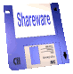
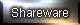

SHAREWARE

Hi. My name is Simon. I recently started downloading shareware. And i wish there were more sites that shared it so im making this site. :)

DOWNLOADS
| Name |
Descripton |
Download |
| 301 |
Point calculator for play 301 darts. |
|
| Big 8 Solitare |
Solitare game for Windows 9x. Doesn't work on XP. |
|
| Connect 4 Game for Windows 95 |
Connect 4 game made by Michael Barrett for Windows 95. |
|
| Castle of the Winds |
Tile-based roguelike game developed by Rick Saada in 1989 and distributed by Epic Games in 1993. |
|
| GNU Chess for Windows |
Port of GNU Chess for Windows. Made by John Stanback and ported by Daryl Baker. |
|
THIS SITE IS ALWAYS UNDER CONSTRUCTION!!!